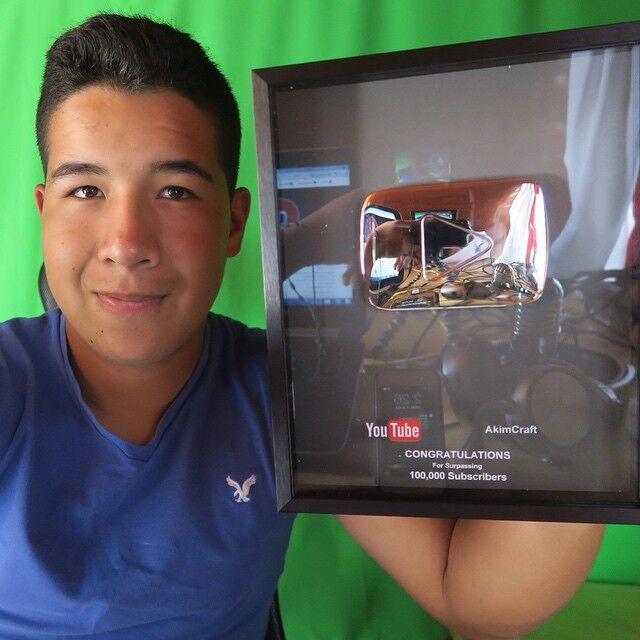

| Biografia |
Redes sociales |
Contactos |
Pagina de Inicio
Victor Calderon AKA ELDED
Victor Paul Calderón, mejor conocido como DED, Dedreviil, o elded, es un youtuber mexicano que actualmente vive en Chicago, Estados Unidos.
Su primer canal fue creado el 24 de noviembre del 2014, con más de 6,000,000 de suscriptores aproximadamente. Empezó subiendo trolleos, momentos
"mamones" (divertidos), Garry's MOD, Minecraft, GTA V, entre otros videojuegos. Este canal fue creado el 24 de noviembre del 2014, con más de 6,000,000
de suscriptores aproximadamente. Empezó subiendo trolleos, momentos "mamones" (divertidos), Garry's MOD, Minecraft, GTA V, entre otros videojuegos.
Este canal se ha hecho muy famoso por sus trolleos, su viejo amigo AkimGames lo invitó a hacer un trolleo para su canal, y Ded aceptó. Después de esto
empezó a subir muchos más vídeos, alcanzando grandes cifras de suscriptores en poco tiempo.
Actualmente, se dedica a hacer videos de entretenimiento, haciendo reviews de memes enviados por sus seguidores en su serie MOMOMIERCOLES o viendo clips de
Twitch en la serie CLIPERINOS . Tambien hace series reaccionando a videos, tendencias de YouTube, posts de Reddit o otros contenidos o donde reacciona
a mensajes o videos enviados por sus subscriptores (COLECCIÓN RATIL ). Todos estos contenidos los realiza en vivo en su canal de Twitch "elded "
Su viejo amigo Akim, Lo invito a Formar parte del Mundo del Entretenimiento via Internet

Todos estos contenidos los realiza en vivo en su canal de Twitch "elded ". También sube gameplays y contenido relacionado a juegos (también extraidos de
su canal de su canal de Twitch), principalmente de juegos como Fortnite, Minecraft, UNO, Rocket League, GTA V, COD WARZONE y PUBG, donde aparecen amigos
YouTubers y streamers, como RobertoCein , BarcaGamer , Pipepunk , AriGameplays , JuanSGuarnizo, AkimGames, entre otros.